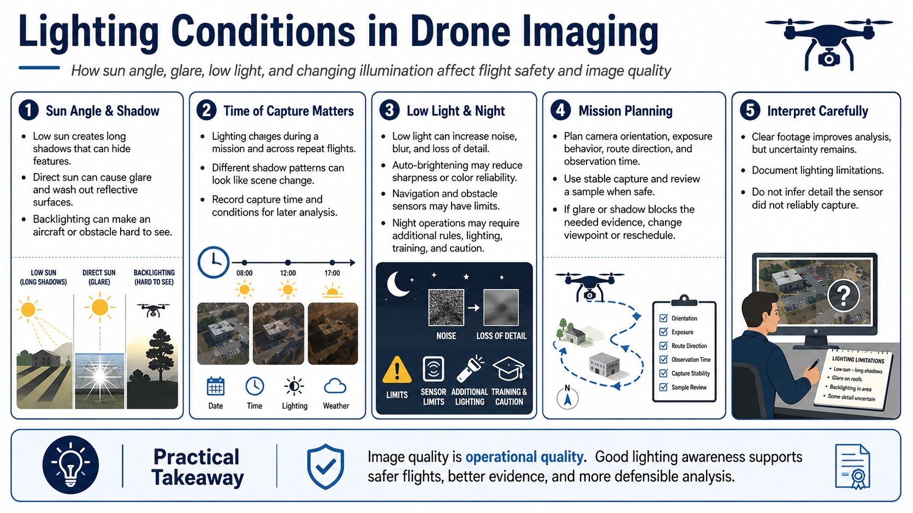

Lighting and Image Quality
Connecting to LMS... Progress: in progress

Narration
Sun angle determines where light and shadow fall. Low sun can produce long shadows that hide features, while direct sun can create glare and wash out reflective surfaces. Backlighting can make an obstacle or aircraft silhouette difficult to see.
Lighting changes during a mission and across repeat flights. Before-and-after imagery collected at different times may show shadow differences that resemble structural change. Record capture time and conditions so analysts can separate illumination from scene change.
Low-light conditions increase sensor noise, motion blur, and loss of detail. A camera may brighten a scene automatically while reducing sharpness or color reliability. Navigation and obstacle sensors may also have environmental limits that differ from the main camera.
Night operations may have additional legal, lighting, training, and risk requirements. Operators should check current official rules and equipment guidance. Darkness does not justify reliance on a video feed or automation beyond its documented capability.
Plan camera orientation, exposure behavior, route direction, and observation time around the mission. Avoid sudden movements, use stable capture, and review a sample when safe. If glare or shadow blocks the required evidence, reschedule or change an authorized viewpoint.
Image quality is operational quality. Clear footage supports analysis, but no image removes uncertainty. Document lighting limitations and do not infer detail that the sensor did not reliably capture.